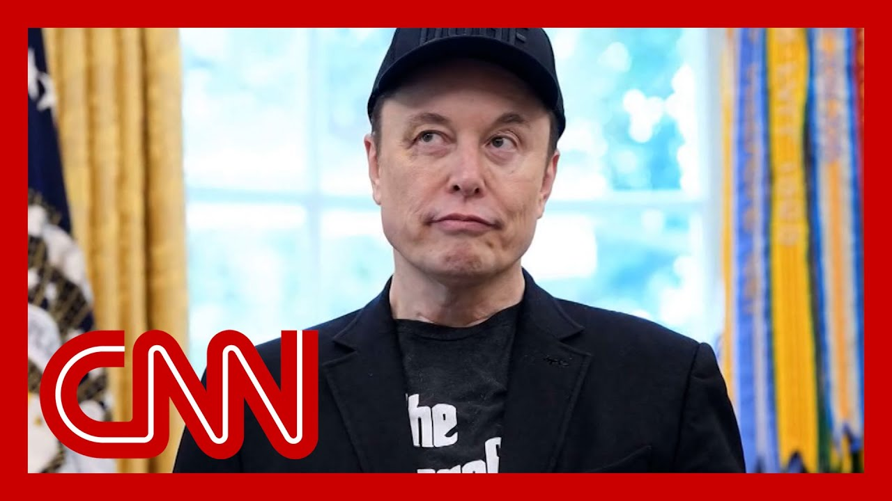

【CNN News 20250702 特朗普不排除将马斯克驱逐出境】
Summary: 特朗普不排除因马斯克对巨额法案的评论而将其驱逐出境 鲍威尔称关税推高通胀但暂不降息。
摘要： 特朗普不排除因马斯克对巨额法案的评论而将其驱逐出境 鲍威尔称关税推高通胀但暂不降息。

⏱️ Estimated Reading Time: 15 min
📚 四级生词 📚 六级生词 📚 雅思生词 📚 托福生词 📚 专八生词 📚 SAT生词 📚 考研生词 📚 GRE生词 📚 高考生词
D-Fund and D-Port, those are two things President Trump say may happen to his former ally Elon Musk.
D-Fund和D-Port是特朗普总统表示可能对其前盟友埃隆·马斯克采取的两项措施。
After Musk, the richest person in the world, threatened to fund primary campaigns against any member of Congress who votes for Trump's so-called big, beautiful bill.
此前，全球首富马斯克威胁资助初选活动，反对任何投票支持特朗普所谓“庞大而美丽”法案的国会议员。
Trump, referring to the billions in federal contracts that benefit Musk's companies.
特朗普提到联邦合同为马斯克公司带来数十亿美元利益。
Out front now, Katie Drummond, global editorial director at Wired and Ryan Mack, a New York Times reporter who covers Musk extensively.
现在，Wired全球编辑总监凯蒂·德拉蒙德和《纽约时报》记者瑞安·麦克（他广泛报道马斯克）加入讨论。
He also co-wrote the book, Character Limit, How Elon Musk Destroyed Twitter.
他还合著了《字数限制：埃隆·马斯克如何摧毁推特》。
And Ryan Musk posted on X so tempting to escalate this so-so tempting, but I will refrain for now.
瑞安·马斯克在X上发帖：“太想升级冲突了——太想了，但我暂时会克制。”
What do you think?
你认为呢？
Is he going to escalate?
他会升级冲突吗？
You know, Elon has Twitter fingers or X fingers now, and he tends to kind of say whatever he wants.
埃隆现在有“推特手指”或“X手指”，倾向于随心所欲发言。
So even though he's talking about restraint and refraining from speaking out, you know, I think in time, you know, he'll probably lash out again, he'll probably tweet.
尽管他谈到克制，但我觉得他迟早会再次爆发，可能发推文。
He'll probably say something that's going to anger the president.
他可能会说些激怒总统的话。
And you know, we've gone through the cycle multiple times now.
这种循环已多次发生。
You know, this is the only the latest iteration.
这只是最新一次。
So, you know, I think we're going to see more for sure.
因此，我认为未来肯定还会有更多。
Katie, who needs who more here?
凯蒂，谁更需要谁？
Does Musk need the federal government more or does the federal government need Musk more?
马斯克更需要联邦政府，还是反之？
Well, look, as much as Elon Musk might hate to hear this, his companies, namely SpaceX and Tesla, rely on the largest of the federal government on contracts, on subsidies, on tax credits, not to mention federal regulation, right?
尽管马斯克不愿承认，他的公司SpaceX和特斯拉依赖联邦合同、补贴、税收抵免及监管。
When we're talking about Tesla and its ability to roll out, you know, autonomous vehicles in different cities, you know, Elon Musk relies on how regulators decide to treat, you know, autonomous vehicles moving forward for that company and that initiative to be able to expand.
例如，特斯拉推广自动驾驶车辆需依赖监管政策。
So there's no question here that when it comes to the richest man in the world or the president of the United States, the president of the United States has a leg up here.
因此，美国总统显然占据优势。
He has the leverage.
他握有筹码。
Yeah.
是的。
I mean, in Ryan, to be clear, though, SpaceX is the primary ride to the International Space Station.
瑞安补充说，SpaceX是国际空间站的主要运输方。
Starlink is critical to the US military and the US government.
星链对美军至关重要。
Usually when you have mutually assured destruction, it stops people from walking up to the line, but these two personalities can't really seem to help it go there.
虽然“相互确保毁灭”通常能阻止冲突，但这两人似乎难以克制。
Does Musk see the logic or the lack of logic and thumbing his nose at someone who can affect the contracts and subsidies of his companies and has the upper hand as Katie explains there or is he motivated just more by emotion?
马斯克是出于情绪，还是无视逻辑对抗能影响其公司合同与补贴且占上风的人？
I think emotion plays a large part in it for sure.
情绪肯定占很大因素。
And, you know, I think people have talked to him about the logic of, you know, going against the most powerful person in the world and going ahead to head with him.
尽管有人劝他别对抗全球最有权势的人。
At the same time, I, you know, I do agree with Katie.
但我也同意凯蒂的观点。
I think Trump does have most of the cards here, but Elon does have cards as well.
特朗普虽握有更多筹码，但马斯克也有。
He understands that the US government relies on SpaceX to get things into space, you know, 3.8 billion dollars worth of contracts last year alone with NASA.
马斯克明白美国政府依赖SpaceX进入太空——仅去年与NASA的合同就达38亿美元。
You know, Tesla is a major manufacturer of electric vehicles and employer in the United States as well.
特斯拉是美国电动车主要制造商和雇主。
So he has cards there that he's willing to play and put forth and challenge Trump.
他愿意打出这些牌挑战特朗普。
And I think it's going to be a matter of who blinks first.
这将是一场“谁先眨眼”的较量。
Katie, if you look at Donald Trump as a, as a businessman before he was president, as the president, he's a spender.
凯蒂，特朗普作为商人和总统习惯消费。
He's very comfortable with buying things on credit.
他习惯借贷购物。
Did Musk get snowed into thinking that this was a person who was serious about tackling deficit spending when all the data points, a lot of the data points show the opposite?
马斯克是否误判了他解决赤字的态度？数据大多显示相反。
You know, it's not totally clear.
尚不完全清楚。
According to President Trump, you know, he's been very clear with, with Musk this entire time about his intentions, particularly his intentions around electric vehicles and EV subsidies.
特朗普称他一直向马斯克明确意图，尤其是电动车补贴方面。
You know, it certainly seems like Elon Musk got into bed, so to speak, with, with the wrong person.
马斯克似乎“选错了伙伴”。
And whatever understanding they may have had several months ago, obviously has not worked out in his favor.
他们数月前的共识显然未对马斯克有利。
Ryan, do you think that Musk will do this primary scheme?
瑞安，你认为马斯克会实施初选计划吗？
I mean, it'd be a lot of people to primary for sure, you know, I mean, the whole Republican party essentially.
这涉及整个共和党，范围很大。
So, you know, he talks a big game, you know, he's talked about fighting Mark Zuckerberg and Akage once and never followed through.
他常夸口（如与扎克伯格格斗）却未兑现。
He's talked about, also, but he's also at the same time talked about buying Twitter, which he did follow through with.
但他收购推特的威胁却成真了。
And so I think with him, it's a matter of trying to assess what's real and what's not.
因此需判断他哪些话会落实。
And, um, yeah, as reporters, we just got to keep following and understanding what he says and reporting it out.
作为记者，我们只能持续追踪报道。
Thank you so much for sharing your analysis and your reporting.
感谢你们的分析与报道。
Katie Drummond, Ryan McWe appreciate it.
凯蒂·德拉蒙德、瑞安·麦克，谢谢。
We might have to put doves on Elon.
我们可能得给马斯克戴上“鸽子”（象征和平）。
You know, doves is the monster that might have to go back and eat Elon.
“鸽子”是可能“吞噬”马斯克的怪物。
We're not prepared about.
我们尚未准备好。
It gets a lot of subsidy.
它获得大量补贴。
The monster that ate Elon, that was President Trump this morning talking about his renewed with billionaire and former first buddy Elon Musk whose companies get at least $38 billion in federal subsidies, according to a Washington Post analysis.
特朗普今早称“吞噬”马斯克的怪物是他自己，提及这位获至少380亿美元联邦补贴（《华盛顿邮报》数据）的亿万富翁前盟友。
The president also suggested he could deport the South African tech CEO after Musk supercharged his criticism of Trump's domestic policy mega bill.
总统还暗示可能驱逐这位南非裔CEO，因马斯克激烈批评其国内政策巨额法案。
Musk replied on his platform X quote, so tempting to escalate this, so, so tempting, but I will refrain for now.
马斯克在X回应：“太想升级了……但暂会克制。”
Mr. Restraint, Elon Musk, that's how he's known.
“克制先生”埃隆·马斯克——这是他的绰号。
Joining us now, CNN's Vanessa Yerkevich and Hadas Goldin, Hadas, this Trump Musk truce did not even last a month and now Musk is threatening again to form a new party and campaign against Republicans who voted yes on the legislation.
CNN记者凡妮莎·耶尔凯维奇和哈达斯·戈尔丁加入讨论。哈达斯指出，特朗普与马斯克的休战未满一月，后者又威胁组建新党反对支持法案的共和党人。
Yeah, and also I should note about the threat to deport Elon Musk.
是的，还需说明驱逐马斯克的威胁。
He is a US citizen.
他是美国公民。
I will make that clear.
这点很明确。
He was a naturalized citizen in the early 2000s, but yeah, these are some of the most concrete political threats we have heard from Elon Musk about what he plans to do going forward because there was a big cloud of questioning after this dust up with President Trump.
他2000年代初入籍，但这是他最具体的政治威胁——此前与特朗普的冲突引发质疑。
What Elon Musk is doing in the midterms?
马斯克在中期选举中意欲何为？
And now he knows he says that he's going to support the primary challenge of any member of Congress who has talked about cutting government spending, but voted for the spill.
他称将支持任何主张削减支出却投票支持法案的议员的初选挑战者。
He put up a poster that looked like a Pinocchio in flames, saying that your face is going to be on this poster in your primary challenges and I'm going to support them.
他发布火焰中皮诺曹海报，称反对者的脸将出现在初选海报上并获其支持。
He's thrown his support behind Congress and Massey, of course, who voted against the President Trump said today, Massey is going to be history, but Elon Musk confirmed today on X that he has donated to Massey's campaign.
他支持投票反对特朗普的议员梅西（特朗普称梅西“将成为历史”），马斯克今日在X确认已捐款给梅西竞选。
And then he talked about creating this new political party, the America party, saying that if this insane spending bill passes, the America party will be formed the next day.
他还称若该疯狂支出法案通过，次日将组建“美国党”。
Lots of conversations we can have about how difficult it is to create a new political party, but Elon Musk is still saying that this is not about the EV, the electric field command, it's or about the federal subsidies.
组建新政党的难度很大，但马斯克坚称这与电动车或联邦补贴无关。
In fact, he posted on X saying in response to a post about Donald Trump's tooth social post on this saying, I am literally saying, cut it all now.
他在X回应特朗普的帖子称：“我明确说现在就削减一切。”
He is saying this is all about the debt.
他称这关乎债务。
He's saying this is all about the spending.
关乎支出。
He is also saying that once again, the spill, he says, makes a mockery of the work, Doge said, and he even said, how are we supposed to get to Mars if America is going to go bankrupt?
他还称法案嘲弄了工作，甚至说“若美国破产，我们如何登陆火星？”
But I can tell you, Jake, investors in Tesla, you're one of his most important companies.
但特斯拉投资者（最重要公司之一）对此不满。
They're not very happy, Tesla stock was down today.
特斯拉股价今日下跌。
They want Elon Musk to go back, focusing on things like robotaxies and his rockets to Mars.
他们希望马斯克回归机器人出租车和火星火箭项目。
And Vanessa Trump's mad at someone else, federal reserve chair Jerome Powell yesterday, Trump wrote Powell, a handwritten letter, urging him to substantially cut interest rates.
凡妮莎提到特朗普对美联储主席鲍威尔不满——昨日手写信要求大幅降息。
How is Powell responding?
鲍威尔如何回应？
Well, Jerome Powell at the central banking forum earlier today was asked, point blank, is President Donald Trump with his harsh public comments making it more difficult for you to do your job?
鲍威尔在央行论坛被直接询问特朗普的尖锐言论是否影响其工作。
And he answered by saying, quote, I'm very focused on just doing my job.
他回答：“我专注于本职工作。”
So brushing off the president's comments, which include, as you mentioned, that letter that you're seeing on screen, there a handwritten letter to Jerome Powell, on what is a sheet of paper that contains other central banks interest rates.
他淡化了特朗普的评论（包括信中列出他国央行利率）。
He notes on that, on that letter there that there are 34 countries that have interest rates lower than the United States.
信中指出34国利率低于美国。
He goes on to say that Jerome Powell is costing the United States billions of dollars and suggests setting rates at 1 percent, currently interest rates are more than four times that.
特朗普称鲍威尔让美国损失数十亿，建议利率降至1%（现为四倍多）。
But Jerome Powell was also asked about why the federal reserve has not cut rates this year.
鲍威尔还被问及为何今年未降息。
And what is the correlation with the trade war?
与贸易战有何关联？
Listen to what he said.
他的回答：
Chair, would the Fed have cut more by now if it weren't for the tariffs?
“若非关税，美联储现在会降更多吗？”
So I do think that's right.
“确实如此。”
In effect, we went on hold when we saw the size of the tariffs and we're essentially all inflation forecasts for the United States went up materially as a consequence of the tariffs.
“关税规模让我们暂停行动，其大幅推高美国通胀预测。”
So we didn't overreact it.
“我们未过度反应。”
In fact, we didn't react at all.
“事实上未作反应。”
We're simply taking some time.
“只是在观察。”
And that time that the federal reserve is taking is this weight and sea mode, waiting to see if the tariffs, in fact, do show up in the economy.
美联储目前采取的是这种观望和谨慎的模式，等待观察关税是否真的会对经济产生影响。
Jerome Powell went on to say he does expect inflation to rise.
杰罗姆·鲍威尔接着表示，他确实预计通胀会上升。
He is not saying whether or not we are going to see a rate cut later this month.
他并未说明本月晚些时候是否会降息。
After that, there are three more opportunities for the federal reserve to cut rates.
之后，美联储还有三次降息的机会。
Jerome Powell in that same event earlier today, Jake did say that he does expect by the end of the year.
杰罗姆·鲍威尔在今天早些时候的同一活动中，杰克确实表示他预计到年底时。
That is when we will start to see some interest rate cuts, but likely not before that, Jake.
那时我们才会开始看到一些降息，但很可能不会在那之前，杰克。
All right.
好的。